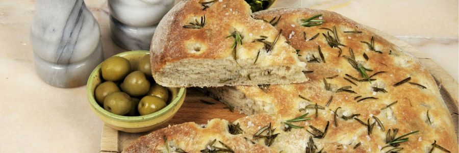

Inicio
Focaccia

Descripción
La focaccia es una especie de pan plano cubierto con hierbas y otros productos alimenticios.Se trata de un plato tradicional de la cocina italiana muy relacionado con la popular pizza.
Ingredientes:
- 400 gr de harina 000
- 30 gr de levadura de cerveza
- 250 ml de agua tibia
- 1 cdita de sal
- 1 cdita de azúcar
- Aceite de oliva
- Sal gruesa
Opcionales (para condimentar): romero, aceitunas, tomate, orégano
Paso a paso:
- Disolver la levadura en el agua con el azúcar. Aparte, en un bol, mezclar el harina con la sal.
- Agregar a la mezcla de harina el agua con la levadura y formar una masa. A tener en cuenta: va a ser una masa más blanda que la de la pizza. Al principio va a quedar más pegajosa pero si se sigue amasando, con paciencia, va a quedar uniforme.
- Dejar leudar en un lugar cálido por una hora aproximadamente, o hasta que doble su tamaño.
- Aceitar las manos y estirar la masa distribuyéndola en una placa para horno aceitada. Con los dedos hacer agujeros en la superficie de la masa, sin llegar a atravesar la focaccia.
- Esparcir un poco de sal gruesa y las hierbas. También se le pueden agregar aceitunas en rodajas y tomate fresco o seco hidratado. Dejar leudar un rato más.
- Hornear en horno precalentado a 250° por 10 minutos, pincelar la superficie por una mezcla de aceite de oliva y agua y hornear por 5 minutos más. Listo! A disfrutar!